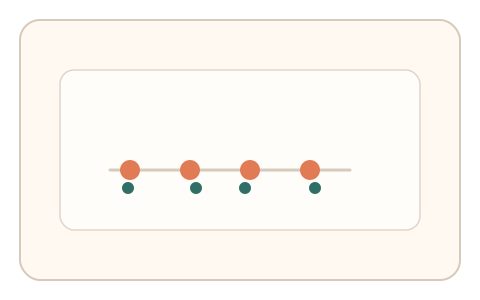

#95
Morphological Analysis - Combination Batches
已扩展
毫秒节拍敲击
通过 3–5 次节拍提示引导点击，评估节律序列的微波动以识别真实性。
概念原文
3–5 次节拍提示引导点击，系统评估节律序列的微波动并与群体基线比对。任务结构为短序列，信号形态为节律序列。
反向识别“过度稳定”的脚本节拍。
研究背景
人类节拍同步会产生可测的微抖动与相位漂移，短序列仍能体现稳定的生理节律特征。脚本往往过度稳定，易被识别。
核心机制
- 呈现 3–5 次节拍提示。
- 用户同步点击或按键响应。
- 记录节律序列与微波动。
- 与群体基线分布进行比对。
用户流程
- 步骤 1：用户看到节拍提示。
- 步骤 2：用户同步敲击完成序列。
- 步骤 3：系统分析节律波动并判定。
判定信号
节律微波动
人类同步存在稳定的微抖动与漂移。
节拍一致性
真实用户的节奏一致性不会过度完美。
判定逻辑
节律波动需落在人类分布区间；过度稳定或随机判异常。
对抗面
- 脚本按固定间隔敲击
- 重放真实用户的节拍序列
防御与缓解
- 随机化节拍间隔与提示方式
- 引入轻微节奏扰动降低模板化
- 叠加指针轨迹与停顿信号
可达性与风险
提供更慢节奏与视觉提示替代，兼容听觉障碍用户。
- 节奏过快导致误差增大
- 设备延迟影响节拍同步
可视化状态

状态 1：节拍提示
连续节拍引导敲击。

状态 2：同步敲击
用户完成节拍序列。

状态 3：波动判定
根据节律波动判定。
参考资料
Sensorimotor synchronization
说明节拍同步中的抖动特征。
Rhythm
说明节律感知与时序一致性。